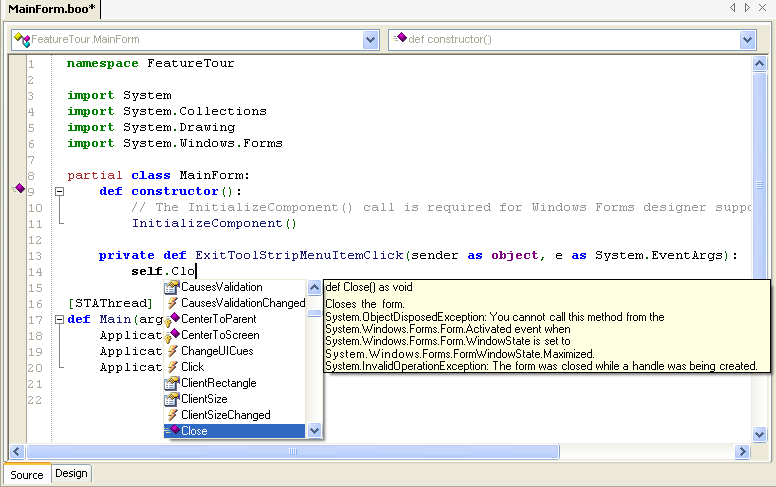

Boo is a .NET programming language, created by Rodrigo Barreto de Oliveira, which has a similar syntax to Python. More information about Boo can be obtained from its home page http://boo.codehaus.org/. SharpDevelop has support for Boo by providing project and file templates, code completion, source code syntax highlighting, and the ability to build Windows Forms applications or console applications written in Boo.
